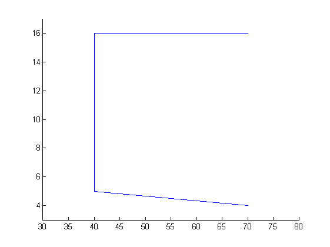
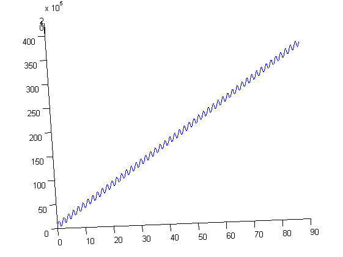
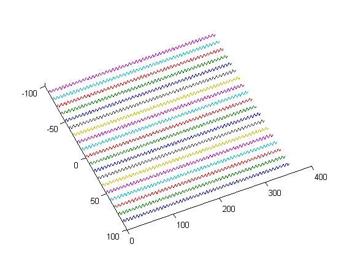
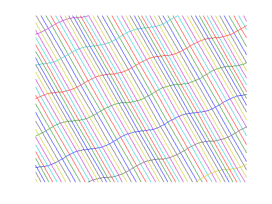
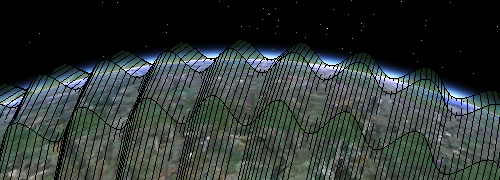

plot data in Google Earth
plotting tols are in the googlePlot toolbox. To see it's contents, use help:
help googlePlot
Contents of googlePlot: KMLcontour - Just like contour KMLcontour3 - Just like contour3 KMLcurvedArrows - makes nice curved arrows that 'go with the flow' KMLfig2png - makes a tiled png figure for google earth KMLline - Just like line (and that's just like plot) KMLmerge_files - Mergers all KML files in a certain directory KMLpatch - Just like patch KMLpcolor - Just like pcolor KMLquiver - Just like quiver KMLsurf - Just like surf KMLsurf_tiled - [lat,lon] = meshgrid(54:1/255:55,4:1/127:5); KMLtext - Just like text KMLtrisurf - Just like trisurf
KMLline
the most extensive, well documented fucntion in the tootlbox is KML line For the most it works just like matlab line, except that all extra options are available via keyword value pairs.
Just a simple case, some lat an lon data. To see approximately what we will get, use the matlab function line.
lat = [70 40 40 70]; lon = [4,5,16,16]; line(lat,lon); axis([30 80 3 17])
KMLline works just like line, except that one has to save the output file, and open that in Google Earth to view the result.
KMLline(lat,lon);
matlab can also draw 3 dimensional lines
clf; lon = 0:.1:360; lat = linspace(0,90,size(lon,2)); z = (1+sind(lon*50))*1e5; line(lat,lon,z) view([-3 88])
and so can KMLline
KMLline(lat,lon,z);
Matlab can draw multiple lines at once
[lat,lon] = meshgrid(90:-10:-90,0:.5:360); z = (1+sind(lon*50))*1e5; clf; line(lat,lon,z) view([66 89])
and so can KMLline
KMLline(lat,lon,z);
We can also add the transposed lines
line(lat',lon',z')
axis([-10 30 10 30 0 1e5])
axis off
 And so can KMLline. Save ase with a different name as the previous KML file and open both in Google Earth. Also, we set the 'fill' property to false
KMLline(lat',lon',z','fill',false);
